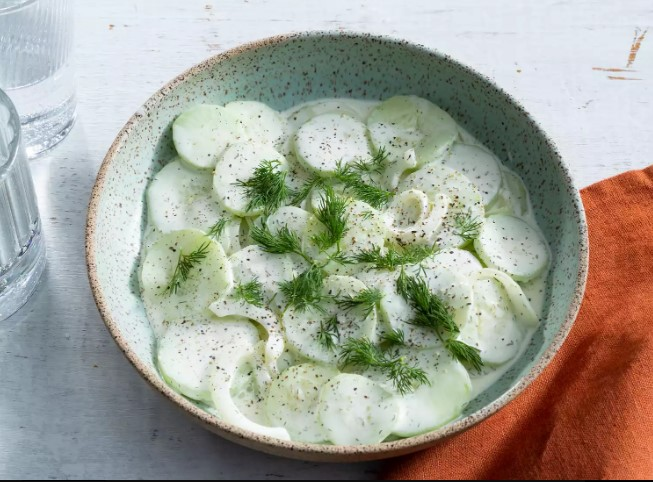

This creamy cucumber salad was my dad's recipe. It's one of our family's all-time summer favorites."
Crisp and creamy cucumber salad makes the perfect summer side.
This old-fashioned recipe combines thinly sliced sweet onions, cucumbers, dill, garlic, and mayo for an unbelievably delicious make-ahead dish. Try your hand at MHudson's family recipe for the tastiest cucumber salad ever.
Ingredients
- 2 large cucumbers, peeled and thinly sliced
- 1 sweet onion, thinly sliced
- 1 tablespoon sea salt
Dressing:
- 1 ½ cups mayonnaise, or more to taste
- 2 tablespoons vinegar
- 1 tablespoon white sugar
- 1 teaspoon dried dill weed
- 1 teaspoon garlic powder
- 1 teaspoon ground black pepper
Recipe instructions
- Mix cucumbers, onion, and salt together in a bowl. Cover with plastic wrap and let sit for 15 to 30 minutes.
- Turn cucumber mixture into a colander set over a bowl or in a sink. Let drain, stirring occasionally, until most of the liquid and salt has drained, 15 to 30 minutes. Transfer drained cucumber mixture to a large bowl
- Whisk mayonnaise, vinegar, sugar, dill, garlic powder, and pepper for dressing together in a bowl until smooth. Pour over cucumber mixture and stir until coated.
- Pour over cucumber mixture and stir until coated.
- Cover with plastic wrap and refrigerate for 1 to 2 hours before serving.
- Enjoy!
Return to main page